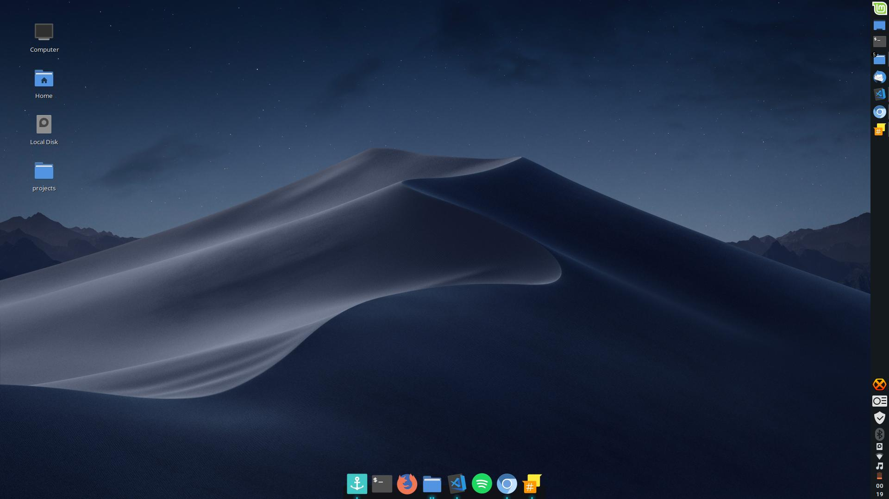

Before I start off with anything about my experience (Feel free to just skip the next few paragraphs in case you have less number of fucks to give), lets get a rough idea of what exactly linux is. SO, linux is an operating system, and more than that, it is an 'open-source' operating system. However when we are going to mention linux mostly we are gonna be talking about the linux kernel and not the OS itself. It was developed by Linus Torvalds, a software engineer of finnish american origin, thanks to wikipedia. We can say that the linux kernel was the grand daddy of modern day linux based operating systems such as that gigantic android, and chrome OS.

(Photo for the guy for God knows why.)
Unlike wondows or mac, linux source code is open to the public. This does mean everyone including you can view and modify the code, and you might think that as a result of this, linux must be prone to hacking and security flaws but its totally vice versa. This is because there are more number of people eager to make an open source foundation safe for everyone as compared to the number of people trying to exploit the same. Not all superhumans wear capes after all. ;)
Back Story
So the windows 10 that I had on my HP Envy had some scheduled updates that it was begging me to perform since about a week. I let the update sit, and it ended up making my PC unusable for more than 3 fricking hours. I mean why cant you just do all of the stuff in the background while letting me work. Instead of me losing all the precious hours of my life to just web surfing and cat videos on youtube, I could have worked on my React project maybe. Whatever.
While surfing a web I came across this particular article, whihc had a link to a video of a guy explaining 10 reasons why linux is better than windows. If I remember properly, his name was 'Engineer Man'. And then I began my hunt, after hunt, after hunt, searching for valid reasons why linux was actually better. There were man. Better security. Faster everything. More battery. Less RAM consumption. AND NO FRICKIN' ADVERTISEMENTS literally begging me to use Edge.
(Seriously microsoft?)
The Present
Spent the next couple hours searching on the web for the distros, and which was better than which, and for what. Come across Linux Mint. Perfect. Installed the iso. Installed Win32 Image Burner. Burned it to a USB Stick. Set my lappy up to boot with the USB Stick. And there it was, Mint, fired up smooth and well.
I happened to like the clean interface that it has to offer. along with a really minimalistic design, absolutely no bloatware, and all of the essential softwares, such as word, excel, powerpoint, and other security requisites, came pre-installed. Not to forget all of them were removable, hence we cannot categorize them under bloatware. There were tons and tons of theming options available right off the bat. The file operations and installations were also free of gimmicks, as most of them are performed using the terminal itself

(One word. Neat.)
Why Linux?
Price: Microsoft windows is costly compared to Linux as each license costs between $50.00-$100.00.
Security: When compared to linux it is much more prone to viruses and other attacks.
Reliability: It needs to be rebooted periodically else there is a possibility of hang up of the system.
NO advertisements (Biggest deal): All those pesky little advertisements and upgrade offers to use windows related services? No more.
(Photo of my interface with the terminal and tons of shit open cuz why not.)
The "Only" Disadvantage
The only disavantage will be hardwares. Due to vast number of manufacturers and vast varieties of hardwares that come equiped in a notebook computer. It might turn out to be nightmare when you will find that a certain hardware underperforms under the opensource umbrella. So if you are planning to dive into the linux world I would suggest going through a with the dual boot first. Create a seperate partition for the linux distro, install it, test it, look if everything works the way you expect it to, and if you seem satisfied, go full on. Wipe the drives with the windows,convert them into unallocated segments and merge it with your linux drives.
(Worth the change? You use. You decide. For me, it was.)
The official linux mint website: www.linuxmint.com